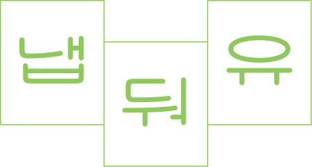
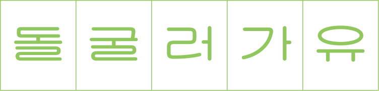
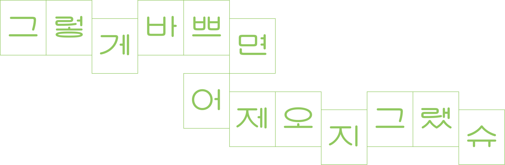
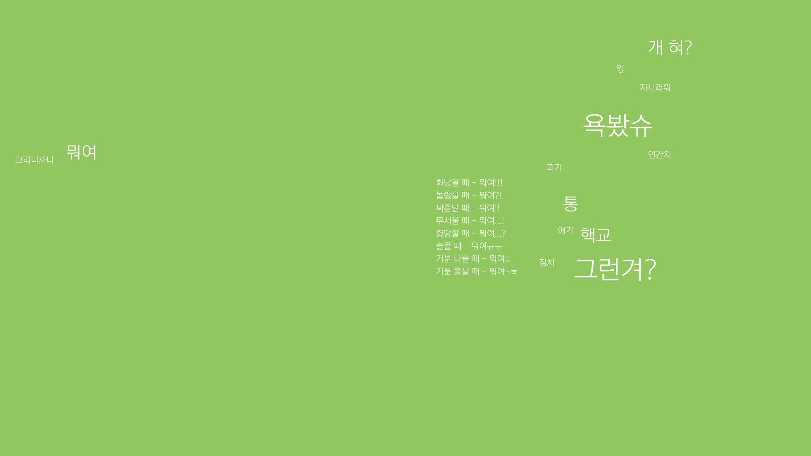
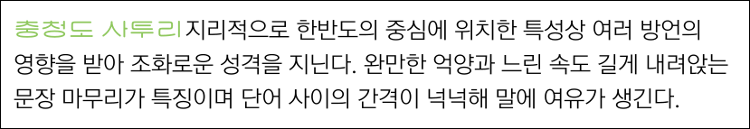
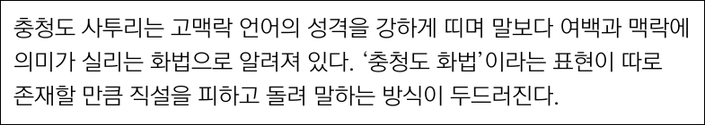

   
 
참고ㅣ온라인 밈, 커뮤니티 글, 충청도 사투리 관련 유튜브 영상
다양한 충청도 사투리 중, 서울에서 살아도 쉽게 사라지지 않는 ‘핵심 사투리’를 선별해 소개한다.
설문조사, 인터뷰, 영상 분석 등의 리서치 결과를 기반으로, 3가지 분류 체계 안에서 생존력이 높은 표현들을 추렸다.
이니시
아니
뭐여
특수어휘
욕보다
짐치
자브럽다
어미
-겨/여
-디/댜
-유/슈
-겄-
당신이 생각하는 끝까지 살아남을
충청도 사투리는 무엇인가요?